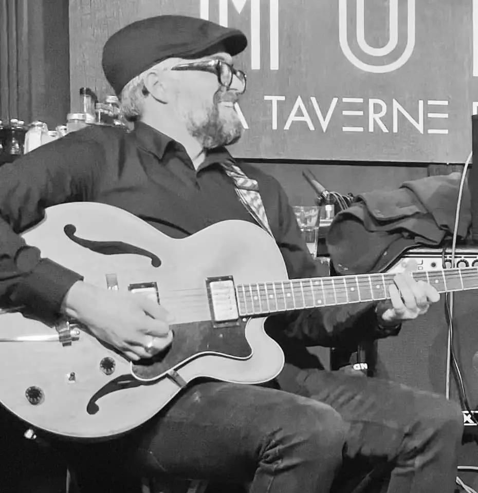

Bienvenue, je suis Bruno,
Développeur
Web & Web Mobile
Bruno Jubert
À 41 ans, j'ai eu le temps de grandir dans un monde où la technologie a évolué à une vitesse folle.
D'un ordinateur à un autre, d'une console à une autre (et on pourrait continuer toute la journée), la chance de grandir dans ce monde en constante évolution m'a permis de comprendre que je devais vite m'adapter à la technologie. Car la technologie ne s'adaptera pas à nous, à moins que nous puissions la comprendre et la maîtriser pour la rendre justement plus "adaptée" et "adaptative".
L'opportunité de me former chez O'Clock m'a permis d'en apprendre davantage sur le monde du développement, de comprendre que la technologie est un outil qui peut nous aider à résoudre des problèmes, à créer des solutions et à rendre le monde meilleur.
Compétences
Hard-Skills
J'ai appris à utiliser de nombreuses technologies durant ma formation chez O'Clock que j'ai eu le plaisir de valider en décrochant le Titre Professionnel en Décembre 2024. Ci-dessous une liste des technologies qui font de moi le développeur que je suis aujourd'hui.
- HTML5
- CSS3
- Sass
- JavaScript
- PostgreSQL
- Angular
- NodeJs
- React
Soft-Skills
Au delà des compétences techniques, j'ai aussi développé un savoir-être qui fait de moi un développeur différent des autres. La liste ci-dessous est bien entendu non-exhaustive mais elle donne une idée de ce que je peux apporter à une équipe de développement.
- Empathique
- Esprit d'équipe
- Organisé
- Résoudre des problèmes
- Anticiper
- Créatif
Projets
Green Roots
Ce projet a été réalisé dans le carde de l'apothéose de notre formation chez O'Clock. L'objectif était de créer un site e-commerce pour une entreprise fictive de vente de plantes en ligne pour soutenir la reforestation.
Les principaux défis de ce projet étaient de travailler en équipe, de respecter les délais et de s'assurer que toutes les fonctionnalités étaient bien implémentées et testées. Nous avons également dû nous adapter aux changements de dernière minute et trouver des solutions aux problèmes techniques qui se sont présentés. Nous avons axés le site dans la même optique que l'entreprise, c'est-à-dire de manière écologique et responsable en choisissant des technologies légeres et performantes.
Infos Sirene
Un projet que j'ai commencé pendant mon stage de fin de formation. Plusieurs missions, entre design, intégration, API et les éléments habituels. Mais aussi l'apprentissage du fabuleux framework Angular.
Vous pouvez voir le front ici et le back ici sur mon GitHub.
Marius Bojan Trio
Un de mes projets les plus aboutis du moment. Ce site vitrine pour musicien est spécial, il permet à l'administrateur du site de gérer lui-même les contenus du site.
Un projet donc qui me touche tout particulièrement car je viens moi-même du monde de la musique. Télécharger le Front ici et le Back ici.
Remerciements
Une vidéo de remerciement pour tous ceux qui m'ont aidé à arriver là où je suis aujourd'hui.
Contact
Le meilleur moyen de faire connaissance malgré la distance, c'est d'aller fouiller (et si c'est dans les poubelles de votre voisin, bin il faut pas..)